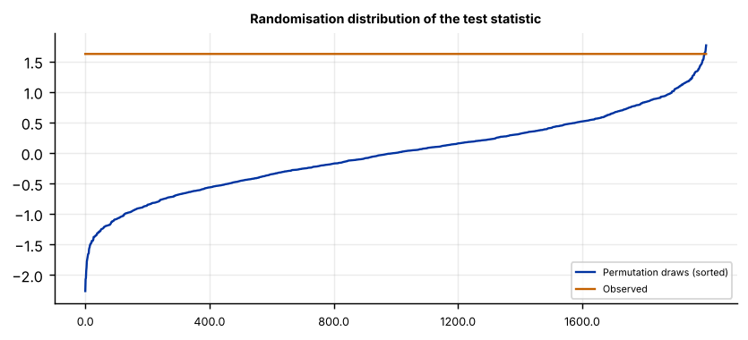

Run this model on your own data in Open Econometric Systems →
Step 1The question and the design
What is the average effect of the treatment, and how sure are we? With random assignment, the difference in mean outcomes between treated and control units is unbiased for the average treatment effect, and its Neyman variance estimate is \(s_1^2/n_1 + s_0^2/n_0\). Pre-treatment covariates are not needed for identification, but adjusting for them can lower the variance. The estimator of Lin (2013) regresses the outcome on treatment, the demeaned covariates and their interactions with treatment, which is never asymptotically less precise than the difference in means and does not require the covariate effects to be the same in both arms. With a small sample, randomisation inference replaces the asymptotic p-value: under the sharp null that treatment has no effect on any unit, every re-assignment of the same number of treated units was equally likely, so the permutation distribution of any test statistic is exact.
Three checks before you report an experiment
- Did the randomisation work? Compare the covariates between arms and test them jointly. Some imbalance is expected by chance (one covariate in twenty at 5%), but a joint rejection suggests a problem with the assignment or the data.
- Is the standard error right for the design? Complete randomisation gives the Neyman variance. Clustered or stratified assignment needs a variance that respects it.
- Could the study have found an effect? Report the minimum detectable effect. A null result from an underpowered study is not evidence of no effect.
How to write it: the model
We analyse the National Supported Work demonstration, in which 185 of 445 disadvantaged workers were randomly assigned to a job-training programme and the rest served as controls. The outcome is earnings in 1978, in thousands of dollars. We report the difference in means with the Neyman standard error, the regression-adjusted and Lin (2013) estimates controlling for age, education, race, marital status, degree status and earnings in 1974 and 1975, and an exact randomisation test of the sharp null of no effect with 2,000 permutations. We check the balance of pre-treatment covariates and report the minimum detectable effect.
Step 2Load the data and check balance
import numpy as np
import pandas as pd
import oes_engine as oes # pip install -e open-econometric-systems/oes-engine
data = open("nsw_experiment.csv").read()
df = pd.read_csv("nsw_experiment.csv")
covs = ["age", "educ", "black", "hisp", "married", "nodegree", "re74", "re75"]
spec = dict(outcome="re78", treat="train", covariates=covs, draws=2000)
r = oes.run("experiment", data, spec)
print(len(df), "workers;", int(df.train.sum()), "treated,", int((1 - df.train).sum()), "control; earnings in 1978: mean", round(df.re78.mean(), 2), " share with zero earnings:", round((df.re78 == 0).mean(), 2))
oes.show(r, "Covariate balance")
print(r["tables"][2]["note"])445 workers; 185 treated, 260 control; earnings in 1978: mean 5.3 share with zero earnings: 0.31
Covariate balance
Mean, treated Mean, control Standardised difference p-value
Covariate
age 25.816 25.054 0.107 0.2653
educ 10.346 10.088 0.141 0.1493
black 0.843 0.827 0.044 0.6471
hisp 0.059 0.108 -0.175 0.0634
married 0.189 0.154 0.094 0.3336
nodegree 0.708 0.835 -0.304 0.0019
re74 2.096 2.107 -0.002 0.9819
re75 1.532 1.267 0.084 0.3847
Note: A joint F test of the covariates predicting treatment: F = 2.14, p = 0.031. Standardised differences above 0.1 deserve a look, though some imbalance is expected by chance.
A joint F test of the covariates predicting treatment: F = 2.14, p = 0.031. Standardised differences above 0.1 deserve a look, though some imbalance is expected by chance.How to read it
The sample has 445 workers, 185 assigned to training and 260 to the control group, and mean earnings in 1978 are $5,300, with 31% of workers earning nothing. Most covariates are balanced: the standardised differences are at most 0.14 except for Hispanic (-0.175) and the absence of a high-school degree (-0.304, 71% of the treated against 84% of the controls, p = 0.002). The joint F test of the eight covariates predicting treatment gives F = 2.14 and p = 0.031, which rejects balance at 5%. One covariate with a p-value of 0.002 out of eight is more than chance would give, so the controls are somewhat more disadvantaged than the treated, which is a reason to report the covariate-adjusted estimate next to the unadjusted one.
Step 3The effect: difference in means, adjustment and Lin
oes.summary(r)
oes.show(r, "Average treatment effect")
oes.show(r, "Randomisation test")Observations: 445
Treated: 185
Effect: 1.6216
Std. err.: 0.6947
Randomisation p-value: 0.0095
Average treatment effect of train on re78
Estimate Std. err. t p-value
Estimator
Difference in means (Neyman) 1.7943 0.6710 2.67 0.0075
Regression adjustment (covariates, HC2) 1.6763 0.6770 2.48 0.0133
Lin (2013) interacted adjustment (HC2) 1.6216 0.6947 2.33 0.0196
Note: 185 treated and 260 control units. Neyman variance for the difference in means; HC2 (leverage-corrected) for the regression estimators, which are consistent for the average effect even if the effects differ across units.
Randomisation test
Statistic p-value Detail
Test
Randomisation inference: sharp null of no effect (2000 draws, Lin-adjusted effect) 1.6216 0.0095 p-value of the two-sided test against the permutation distributionHow to read it
The difference in means is 1.794 (standard error 0.671): trainees earn $1,794 more in 1978, t = 2.67 and p = 0.0075. Adjusting for covariates gives 1.676 (0.677) and the Lin estimator 1.622 (0.695), a reduction of 0.12 to 0.17, which is in the direction expected if the treated group started out slightly better off, and well within one standard error. The standard errors do not fall, because the covariates predict 1978 earnings poorly in this sample, so adjustment here is a robustness check and not a gain in precision. The randomisation test of the sharp null for the Lin statistic gives p = 0.0095. The effect is about 36% of the mean earnings of the control group (4.55).
Step 4Randomisation inference and precision
oes.show(r, "Precision and power")
plain = oes.run("experiment", data, dict(outcome="re78", treat="train", draws=2000))
print("randomisation p-value, difference in means:", plain["tables"][1]["rows"][0][2], " Neyman normal p-value:", plain["tables"][0]["rows"][0][4])
oes.plot(r, "Randomisation distribution", ncols=1, size=(6.5, 3))Precision and power
Value
Quantity
Control-group mean of the outcome 4.5548
Pooled standard deviation of the outcome 6.5795
Minimum detectable effect (80% power, 5% test) 1.7730
MDE as a share of the control mean 0.3890
Note: Computed for the difference in means with equal variances; covariate adjustment lowers the standard error and the MDE when the covariates predict the outcome.
randomisation p-value, difference in means: 0.004 Neyman normal p-value: 0.0075
How to read it
The minimum detectable effect at 80% power and a 5% test is 1.77, almost exactly the estimated effect, and 39% of the control mean. The study was therefore only just large enough to detect an effect of this size, and smaller effects would have gone unnoticed. The exact randomisation test of the difference in means gives p = 0.004, against 0.0075 from the normal approximation, so the two agree on rejection. Earnings are skewed and a third of the workers earn nothing, which is why a test that does not rely on normality is a useful check.
Step 5Subgroups and robustness
rows = []
for name, sub in {"all": df, "no high-school degree": df[df.nodegree == 1], "has degree": df[df.nodegree == 0], "black": df[df.black == 1], "not black": df[df.black == 0],
"earned in 1975": df[df.re75 > 0], "no earnings in 1975": df[df.re75 == 0]}.items():
rr = oes.run("experiment", sub.to_csv(index=False), dict(outcome="re78", treat="train", draws=500))
e = rr["tables"][0]["rows"][0]
rows.append((name, len(sub), e[1], e[2], e[4]))
print(pd.DataFrame(rows, columns=["subgroup", "n", "effect", "s.e.", "p-value"]).to_string(index=False)) subgroup n effect s.e. p-value
all 445 1.7943 0.6710 0.0075
no high-school degree 348 1.1540 0.7511 0.1244
has degree 97 3.1920 1.4502 0.0277
black 371 2.0287 0.7505 0.0069
not black 74 0.8028 1.3824 0.5614
earned in 1975 156 1.6914 1.3093 0.1964
no earnings in 1975 289 1.7114 0.7388 0.0205How to read it
The effect is 1.15 (standard error 0.75) for workers without a high-school degree and 3.19 (1.45) for those with one, and 2.03 (0.75) for black workers against 0.80 (1.38) for others. The effect is 1.69 for workers with earnings in 1975 and 1.71 for those without. None of these differences is established: degree against no degree is 2.04 with standard error 1.63 (p = 0.21) and black against non-black is 1.23 with standard error 1.57 (p = 0.44). With seven subgroup tests, 0.35 nominal rejections at 5% would occur by chance. Treat subgroup results as descriptive, and specify them in advance if you want to report them as findings.
Step 6Write the results
How to write it: results
Workers randomly assigned to the training programme earned $1,794 more in 1978 than the controls (Neyman standard error 0.671, p = 0.0075). Controlling for pre-treatment covariates with the interacted estimator of Lin (2013) gives $1,622 (standard error 0.695), and the exact randomisation test of the sharp null of no effect, based on 2,000 permutations, gives p = 0.0095. The treatment and control groups differ in the share without a high-school degree (71% against 84%) and the joint balance test rejects at 5% (F = 2.14, p = 0.031), so we report the adjusted estimate, which is smaller than the unadjusted one. The minimum detectable effect is $1,773 (39% of the control mean), so the study could detect an effect of this size but not a much smaller one. Differences in effect across subgroups are not statistically significant (for example degree against no degree, p = 0.21).
| Report | What | Where |
|---|---|---|
| Design | Assignment, arms, outcome, covariates | Step 1 |
| Balance | Standardised differences and a joint test | Step 2 |
| Effect | Difference in means, adjustment, Lin, randomisation test | Step 3 |
| Precision | Randomisation inference and minimum detectable effect | Step 4 |
| Heterogeneity | Subgroups, with a caution on multiple testing | Step 5 |
References. Neyman, J. (1923/1990), "On the Application of Probability Theory to Agricultural Experiments," Statistical Science 5. Fisher, R. (1935), The Design of Experiments. Lin, W. (2013), "Agnostic Notes on Regression Adjustments to Experimental Data," Annals of Applied Statistics 7. LaLonde, R. (1986), "Evaluating the Econometric Evaluations of Training Programs with Experimental Data," American Economic Review 76. Dehejia, R. and Wahba, S. (1999), "Causal Effects in Nonexperimental Studies," Journal of the American Statistical Association 94. Athey, S. and Imbens, G. (2017), "The Econometrics of Randomized Experiments," in Handbook of Economic Field Experiments.